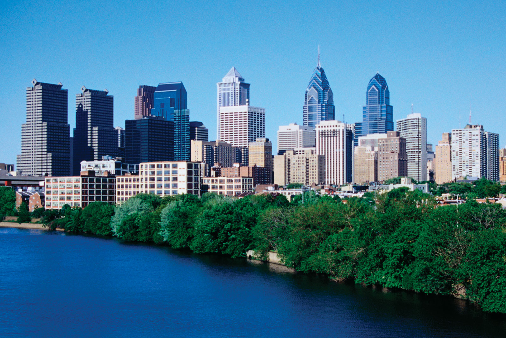

Philadelphia
Interesting facts about Philadelphia
- Philly is home to the nation’s first hospital
(Philadelphia Hospital, co-founded in 1751 by Benjamin Franklin),
first university (University of Pennsylvania in 1740) and first zoo (Philadelphia Zoo in 1874).
- To celebrate the Super Bowl,
Philadelphia is home to the annual Wing Bowl.
The eating competition, which starts at 5:30 a.m., features two 14-minute rounds of wing-eating followed by a 2-minute final lightning round. Pat Bertoletti won this year’s 23rd competition by breaking a record and eating 444 wings.
- About 50 tree seedlings went to the moon and back with the Apollo 14 mission in 1971, and one of these “moon trees” was planted in Philadelphia’s Washington Square Park. In 2011, when the tree was starting to deteriorate, national park officials replaced it with a clone.